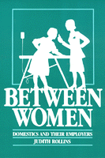

A study of the unique relationship between women employers and employees
A study of the unique relationship between women employers and employees


 A study of the unique relationship between women employers and employees
A study of the unique relationship between women employers and employees

|  |
Between WomenDomestics and Their EmployersJudith Rollinspaper EAN: 978-0-87722-491-4 (ISBN: 0-87722-491-9) |
Jessie Bernard Book Award, American Sociological Association, 1987
"This work meticulously examines the salient past and contemporary problems of the employer-household worker relationship...perceptive study."
—Signs
Between Women is the result of forty in-depth interviews, interviews enhanced by the author's own experience as a domestic worker for ten employers in the greater Boston area. The reader is quickly drawn into the world of domestic workers as the author allows the women to speak for themselves whenever possible. Clearly relevant to labor studies, women's studies and black studies, at its essence this book is a study of the social psychology of relationships of domination. Yet, while focusing on these relationships, the author never loses sight of the larger social structure and how it affects and is affected by employer-domestic dyads.
The opening chapter provides an overview of domestic service in the Western tradition, most notably a detailed history of servitude in the South and northeastern United States, with brief attention to a few non-Western locales. Then, what follows is a description of the conditions of work—the physical labor, hours, compensation, and problems—with the focus on the women and the major dynamics of their relationships. Unlike many works on domination, this book gives as much attention to the effects on the minds and lives of the employers as it does to the effects on the domestics. And it is this exploration, in particular—of the demands, reactions, preferences and perceptions of employers—that reveals how this labor arrangement functions ideologically as well as materially to support the class, gender and racial hierarchies of this country.
"Rollins approaches her topic both as a sociologist and as a subject.... Her insights into the unique relationship between women employers and employees are quite striking.... Rollins includes both a history of domestic work and a sociological interpretation of the experience in this contemporary study of one of the world's oldest professions. An important and meaningful work, especially for students of labor, women's studies, and ethnic studies—all levels."
—Choice
"[T]his book is rich and alive with history and contemporary voices. Rollins has done a tremendous job of pulling together the past and present...and documenting her work with her own experience."
—The Women's Review of Books
Introduction
1. The History of Domestic Service
2. The Work
3. The Women
4. Deference and Maternalism
5. Invisibility, Consciousness of the Other, Ressentiment
Notes
Index
 | Judith Rollins is Assistant Professor of Sociology at Simmons College in Boston. |
Labor Studies and Work
Women's Studies
Labor and Social Change, edited by Paula Rayman and Carmen Sirianni.
Labor and Social Change, edited by Paula Rayman and Carmen Sirianni, includes books on workplace issues like worker participation, quality of work life, shorter hours, technological change, and productivity, as well as union and community organizing and ethnographies of particular occupations.
© 2015 Temple University. All Rights Reserved. This page: http://www.temple.edu/tempress/titles/349_reg.html.